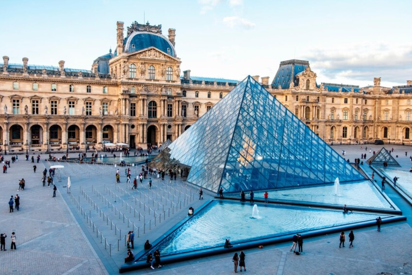
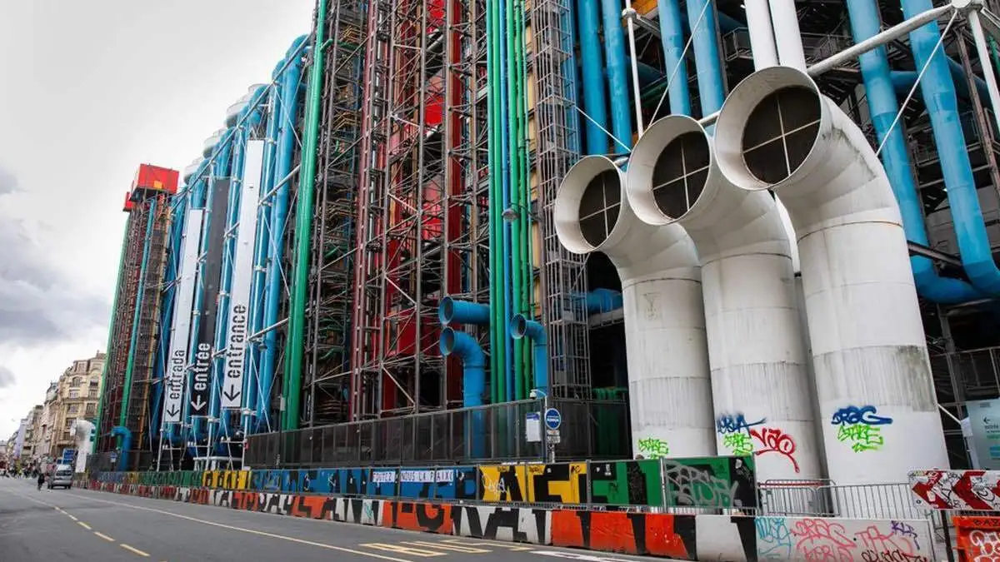
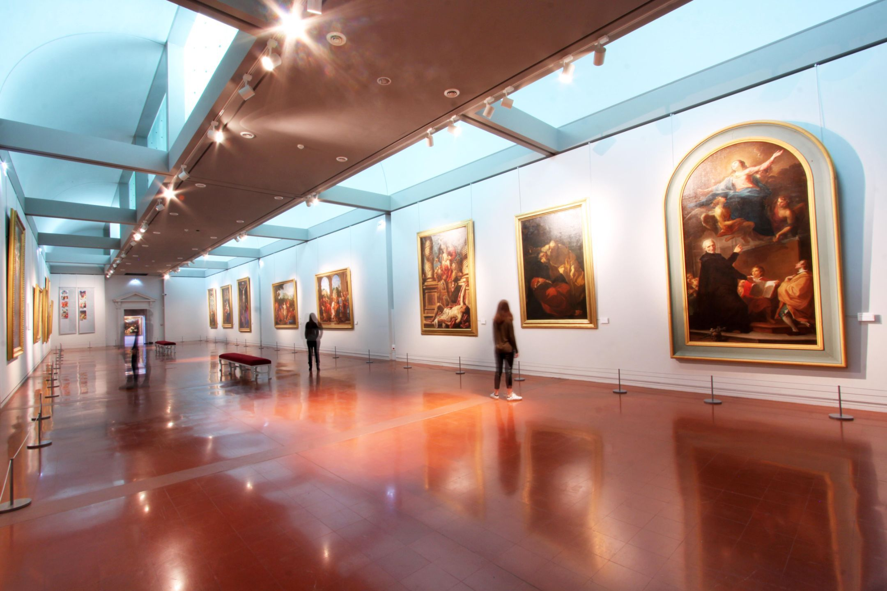

Museo del Louvre

El Louvre es uno de los museos más grandes del mundo. En concreto,
se ubica en pleno centro de París y recoge casi 35.000 objetos en
sus 60.600 m² que abarcan desde la Prehistoria hasta el siglo XXI.
Gracias a que cada año más de 8 millones de personas entran en él,
se considera el museo más visitado del mundo.
Antes de convertirse en museo, el Louvre fue un castillo y un
palacio real. Situado en pleno centro de París, al borde del Sena y
cerca del Palacio de las Tullerías, este monumento ha sido
residencia de muchos reyes de Francia. Cuando terminó la Revolución
Francesa, se hizo realidad el proyecto de inaugurar el museo, que
llevaba varios años en marcha. Finalmente, el Museo del Louvre
empezó su andadura en 1793.
De entre las decenas de miles de obras de arte que conforman las
colecciones del Louvre, algunas son mundialmente conocidas, como la
Gioconda, la balsa de la Medusa o la Venus de Milo.
Visita el Louvre
Centro Pompidou

Centro cultural icónico de arte moderno y contemporáneo, famoso por
su arquitectura "al revés" (tuberías y estructuras expuestas en
colores vivos). Alberga obras de Picasso, Kandinsky y Dalí, además
de bibliotecas y espacios multidisciplinarios.
Criticado por romper con la estética clásica parisina, hoy es un
símbolo de innovación. Recibe 3.5 millones de visitantes anuales.
Visita el Pompidou
Museo Fesch

Importante museo de bellas artes con una destacada colección de
pinturas italianas (siglos XIV-XIX), donada por el cardenal Joseph
Fesch, tío de Napoleón Bonaparte. Incluye obras de Botticelli,
Tiziano y Veronese.
Construido en 1827-1852 como "Liceo Fesch", mezcla neoclasicismo y
estilo imperial. Alberga también la Capilla Imperial donde están
enterrados miembros de la familia Bonaparte.
No te pierdas el "Retrato de Napoleón como primer cónsul" (François
Gérard) y la sala dedicada a pintores corsos. El museo ofrece
visitas guiadas sobre la relación entre arte y poder napoleónico.
Visita el Fesch